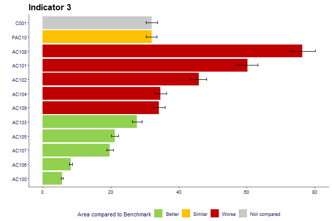

knitr::opts_chunk$set(fig.path = "charts-")Introduction
This vignette demonstrates how to create some of the charts available in this package. All of the names of the functions match the name for the chart on Fingertips.
A note on ordering within the charts
The charts produced, generally, order the data alphabetically. In the static map section and the compare areas, there are worked examples of reordering the factor levels so they are presented in the required order in the legends.
Overview
This function plots the Overview view (also known as
the Tartan Rug). All of the charts in this vignette, starting with this
one, use a function called create_test_data() from this
packages to generate a dummy dataset. This data has the same structure
as data exported from the fingertips_data() function in the
fingertipsR package.
region <- "PAC19"
top_names <- c("C001", region)
dfdom <- create_test_data() %>%
filter((AreaCode %in% top_names |
ParentAreaCode == region)) %>%
mutate(Value = round(Value, 1))This is how the overview() function works:
p <- overview(data = dfdom,
area = AreaCode,
indicator = IndicatorName,
value = Value,
fill = Significance,
timeperiod = Timeperiod,
top_areas = top_names, wrap_length = 40,
value_label_size = 0.7)
p
Compare indicators
Here is a function that helps produce a scatter plot as displayed on
Fingertips. First the data needs to be changed to the correct format.
The two variables that will be plotted need to be in separate fields.
The pivot_wider() function from the tidyr
package demonstrates how to do this below:
df <- create_test_data() %>%
filter(IndicatorName %in% c("Indicator 1", "Indicator 2")) %>%
select(IndicatorName, AreaCode, Value) %>%
mutate(IndicatorName = gsub(" ", "", IndicatorName)) %>%
pivot_wider(names_from = IndicatorName,
values_from = Value)This is how the compare_indicators() function works:
p <- compare_indicators(data = df,
x = Indicator1,
y = Indicator2,
xlab = "This is indicator 1",
ylab = "This is indicator 2",
highlight = c("C001", "AC101"),
area = AreaCode,
add_R2 = TRUE)
p
Maps
Here the package provides both interactive and static maps.
The shape files need to be sources from the ONS Geography Portal. To
do this, click on the API button here,
using Counties and Unitary Authorities as an example, and then use the
GeoJSON address as the string input to the ons_api
parameter.
ons_api <- "https://opendata.arcgis.com/datasets/687f346f5023410ba86615655ff33ca9_4.geojson"Static
Note, before plotting the chart, the levels of the field that is determining the fill of the polygons need to be reordered, as if they aren’t, they will be ordered alphabetically in the legend:
ordered_levels <- c("Better",
"Similar",
"Worse",
"Not compared")
df <- mapdata %>%
mutate(Significance =
factor(Significance,
levels = ordered_levels))The default map type is static:
p <- fingertipscharts::map(data = df,
ons_api = ons_api,
area_code = AreaCode,
fill = Significance,
title = "Map title",
subtitle = "Map subtitle",
copyright_size = 3)
p
Interactive
It is also possible to have interactive maps. Note, for this to work the value parameter must be included and subtitle doesn’t work.
p <- map(df,
ons_api = ons_api,
area_code = AreaCode,
fill = Significance,
type = "interactive",
value = Value,
name_for_label = AreaName,
title = "Map title<br>with a line break")
p
Trends
This function allows users to plot the trends graph. The dummy dataset is slightly manipulated here to extend over a few years. A significance is then prescribed based on whether the confidence intervals overlap the country value.
df <- create_test_data() %>%
arrange(IndicatorName) %>%
mutate(Timeperiod = rep(c("2011", "2012", "2013", "2014", "2015", "2016"),
each = 111))
country_val <- df %>%
filter(AreaCode == "C001") %>%
select(Timeperiod, Country_val = Value)
df <- df %>%
left_join(country_val, by = "Timeperiod") %>%
mutate(Significance = case_when(
LCI > Country_val ~ "Higher",
UCI < Country_val ~ "Lower",
TRUE ~ "Similar"
))Here is an example of how to use the trends()
function:
p <- trends(df,
timeperiod = Timeperiod,
value = Value,
area = AreaCode,
comparator = "C001",
area_name = "AC103",
fill = Significance,
lowerci = LCI,
upperci = UCI,
title = "Title of graph",
subtitle = "AC103 compared to C001",
xlab = "Year",
ylab = "Unit of measurement")
p
Compare areas
This code filters the dummy dataset for a single region and its parent, and all the child areas within that region.
region <- "PAC10"
top_names <- c("C001", region)
df <- create_test_data() %>%
filter(IndicatorName == "Indicator 3",
(ParentAreaCode == region |
AreaCode %in% top_names))Note, before plotting the chart, the levels of the field that is determining the fill of the bars need to be reordered, as if they aren’t, they will be ordered alphabetically in the legend:
ordered_levels <- c("Better",
"Similar",
"Worse",
"Not compared")
df <- df %>%
mutate(Significance =
factor(Significance,
levels = ordered_levels))The compare_areas function makes plotting the compare
areas chart straight forward.
p <- compare_areas(df,
AreaCode,
Value,
fill = Significance,
lowerci = LCI,
upperci = UCI,
order = "desc",
top_areas = top_names,
title = unique(df$IndicatorName))
p
Area profiles
The area profiles image is created using the
area_profiles() function.
dfspine <- create_test_data()
p <- area_profiles(dfspine,
value = Value,
count = Count,
area_code = AreaCode,
local_area_code = "AC110",
indicator = IndicatorName,
timeperiod = Timeperiod,
trend = Trend,
polarity = Polarity,
significance = Significance,
area_type = AreaType,
cols = "fingertips",
median_line_area_code = "C001",
comparator_area_code = "PAC11",
datatable = TRUE,
header_positions = c(-1.2, -0.9, -0.63,
-0.48, -0.36, -0.21,
-0.05, 1.08),
relative_domain_text_size = 0.75,
relative_text_size = 1.2,
bar_width = 0.68,
horizontal_arrow_multiplier = 0.7)
p
Population
This function provides the ability to draw the traditional population
pyramid. Note that the ordering of the age bands are defined prior to
the data being provided to the population() function:
set.seed(1234)
agelevels <- c("0-4", "5-9","10-14","15-19",
"20-24","25-29","30-34",
"35-39","40-44","45-49",
"50-54","55-59","60-64",
"65-69","70-74","75-79",
"80-84","85-89","90+")
local_males <- dnorm(seq(1, 19), mean = 5, sd = 5) * 1e5
local_females <- dnorm(seq(1, 19), mean = 4, sd = 5) * 1e5
region_males <- dnorm(seq(1, 19), mean = 5, sd = 7) * 1e5
region_females <- dnorm(seq(1, 19), mean = 4.5, sd = 6.5) * 1e5
country_males <- dnorm(seq(1, 19), mean = 4, sd = 3) * 1e5
country_females <- dnorm(seq(1, 19), mean = 5, sd = 3) * 1e5
pops <- data.frame(Value = c(local_males,
local_females,
region_males,
region_females,
country_males,
country_females),
AreaName = c(rep("Local", 38),
rep("Region", 38),
rep("Country", 38)),
Sex = rep(c(rep("Male", 19),
rep("Female", 19)),
times = 3),
stringsAsFactors = FALSE) %>%
mutate(Age = factor(rep(agelevels, 6),
levels = agelevels))This is how the function works:
p <- population(pops,
value = Value,
sex = Sex,
age = Age,
area = AreaName,
area_name = "Local",
comparator_1 = "Country",
comparator_2 = "Region",
title = "Age Profile",
subtitle = "Area population for this time period",
xlab = "% of total population")
p
Box plots
Box plots can also be drawn.
df <- create_test_data() %>%
arrange(IndicatorName) %>%
mutate(Timeperiod = rep(c("2011", "2012", "2013", "2014", "2015", "2016"),
each = 111))This is how the function works. Note, the levels of the factor for
the timeperiod parameter may need to be reordered, as this
determines the order along the x-axis:
p <- box_plots(df,
timeperiod = Timeperiod,
value = Value,
title = "Box plot for indicator",
subtitle = "Add a subtitle here",
ylab = "Unit of measurement")
p